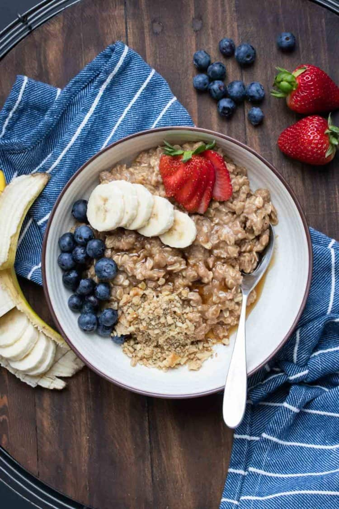

Oatmeal

Ingredients
- 1/2 cup rolled oats
- 2/3 cup canned lite coconut milk
- 1 tablespoon almond butter
- 1 tablespoon maple syrup
- 1/4 teaspoon cinnamon
- pinch sea salt
Steps
- Add the ingredients into a pot over medium low heat and stir until just thickening. About 2-3 minutes.
- Remove from heat and add to bowl. Use toppings of choice and enjoy!
Recipe courtesy of https://www.veggiesdontbite.com/simple-oatmeal/